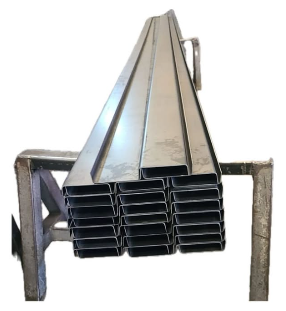

<main>
    <section class="container">
        <h2>Nossos Produtos</h2>

        <div class="produtos">

            <!-- Produto 1 -->
            <div class="produto">
                

                <h3>Forma para Produzir Trilhos de Laje Treliçada</h3>

                <p>
                    A forma para produzir trilhos de laje treliçada foi desenvolvida para garantir
                    praticidade, resistência e excelente acabamento no processo de fabricação.
                </p>

                <p>
                    Leve e de fácil manuseio, possui formato chanfrado que facilita a desforma após
                    a fabricação do trilho, além de acabamento visual liso.
                </p>

                <p>
                    Compatível com treliças H8, H12 e H16, oferece maior resistência em comparação
                    às lajes convencionais.
                </p>

                <p>
                    Realizamos corte e dobra de até <strong>6 metros sem emendas</strong>.
                    Para medidas personalizadas, solicite sua cotação.
                </p>
            </div>

            <!-- Produto 2 -->
            <div class="produto">
                

                <h3>Canaleta em Aço Galvanizado para Posto de Gasolina – Modelo Padrão</h3>

                <p>
                    As canaletas em aço galvanizado são fabricadas em chapa de aço galvanizada
                    de alta resistência, indicadas para a coleta e o escoamento de água.
                </p>

                <p>
                    São ideais para aplicação em postos de gasolina e áreas com tráfego de veículos,
                    conduzindo a água até o sistema de separação de água e óleo.
                </p>

                <p>
                    Oferecem durabilidade, resistência à corrosão e segurança ambiental,
                    mesmo em condições de uso intenso.
                </p>
            </div>

        </div>

        <p>
            Entre em contato conosco para conhecer todos os detalhes e condições especiais.
        </p>
    </section>
</main>
